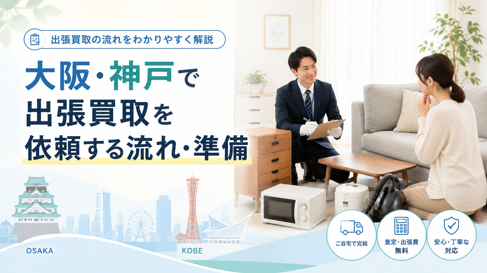

RECYCLE SHOP GUIDE / OSAKA & KOBE
大阪市24区・神戸市9区・堺・東大阪・西宮・尼崎・姫路・明石など、関西エリアでリサイクルショップや出張買取を利用するときに役立つ記事をまとめています。おすすめショップの比較、品目別の選び方、出張買取の流れまで、知っておきたい情報を順次更新中です。

重要書類・貴重品の確認、家族での方針決め、買取できる物の仕分け、家具家電の状態確認、思い出の品の扱い、出張買取の活用、遠方からの整理、空き家対策、業者選びまで、無理なく進めるための手順を解説します。
記事を読む →
初めての出張買取で何を準備すればよいか分からない方向け。申込から査定・搬出までの基本的な流れと、家電の年式確認、型番メモ、写真撮影、付属品、搬出経路、本人確認書類まで、当日スムーズに進めるためのチェックポイントを解説します。
記事を読む →
冷蔵庫・洗濯機・テレビ・電子レンジ・エアコン・ソファ・ダイニング・ベッド・食器棚など、主要品目別の買取相場目安と査定で見られるポイントを解説。高く売るコツや出張買取の活用法もまとめています。
記事を読む →
大阪市内・神戸市内・関西エリアで利用しやすい大手リサイクルショップを目的別に比較。家具・家電・ブランド品・楽器・ホビーまで、売りたい品目別の選び方と、関西ならではの密集住宅地・商業集積を踏まえた業者選びのポイントも解説します。
記事を読む →家まるごと、しっかり高く。LINEで写真を送るだけで仮査定OK。
最短即日でお伺いします。査定無料・キャンセル料無料。